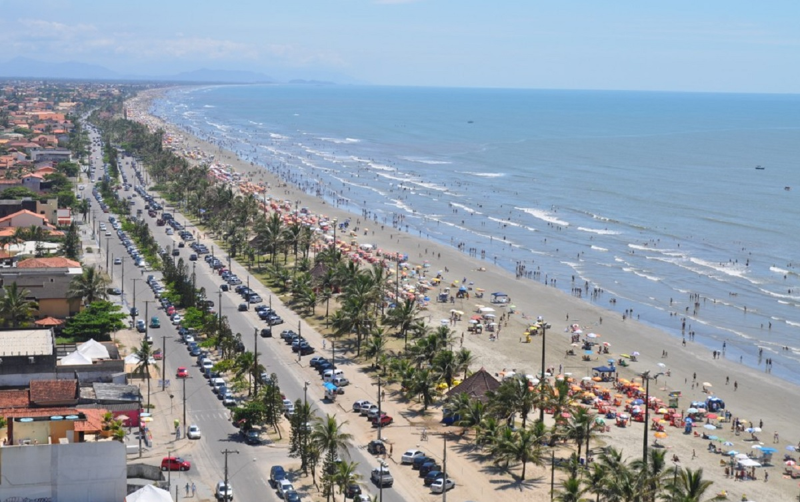
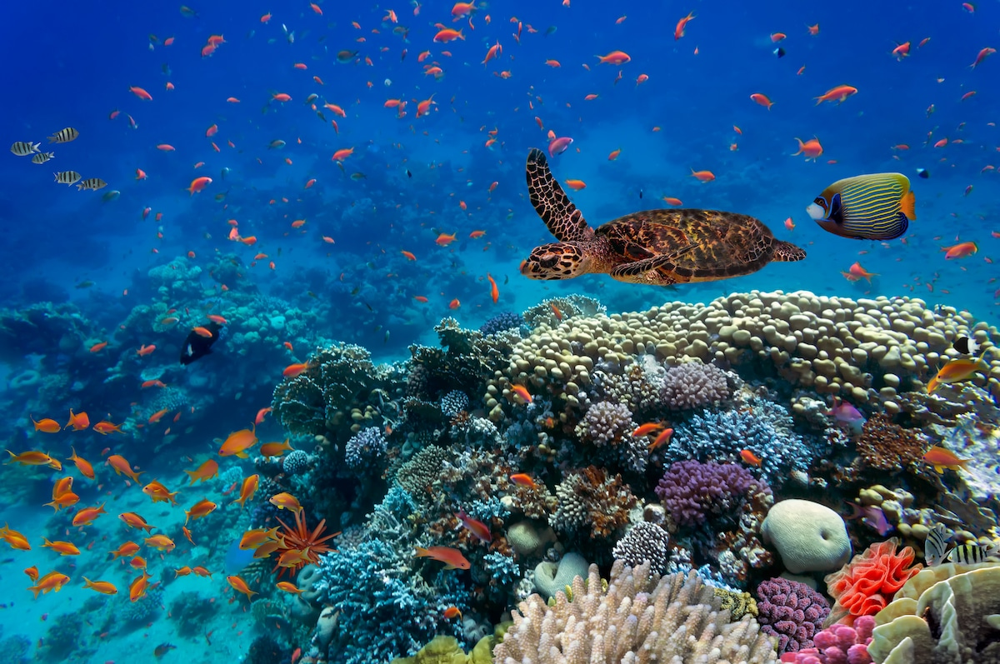
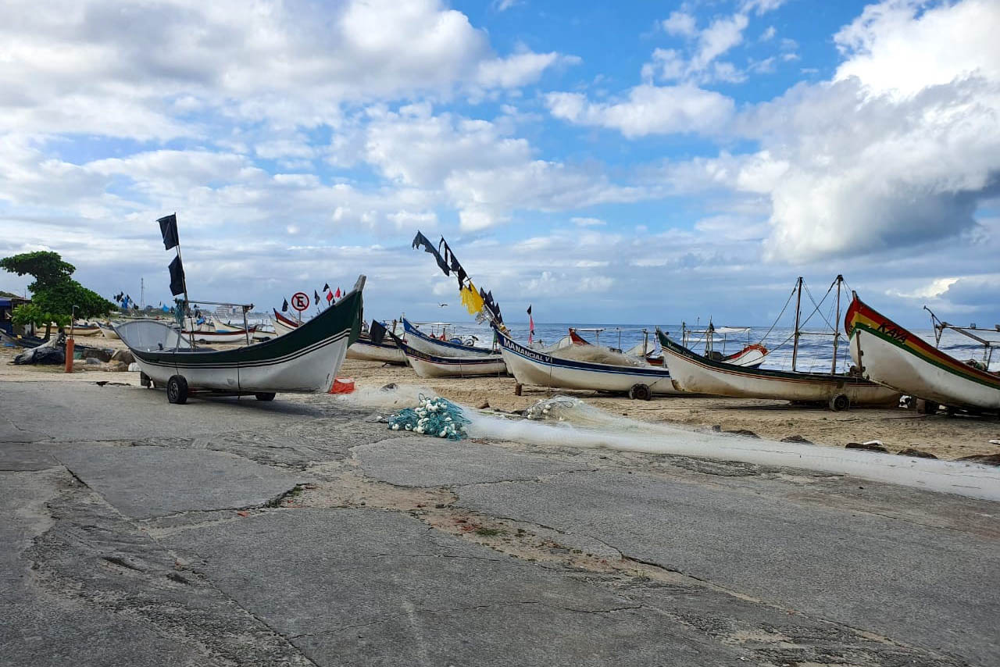

Público
Quem Será Impactado
Comunidades Costeiras e a Vida Marinha!
Público-Alvo
Nossa proposta estando em prática, com o avanço tecnológico ao longo dos anos, todas as pessoas poderão ser impactadas por conta da melhoria da qualidade dos oceanos e da redução da poluição
Porém, por ser um trabalho em inicio, o nosso público alvo atual será:
- Comunidades locais e colônias de pescadores
- Associações de moradores de áreas costeiras
- Organizações Não Governamentais (ONGs)
- Empresas e indústrias relacionadas ao mar
- Agências governamentais e formuladores de políticas públicas




Clean Ocean - Global Solution - @Todos os direitos reservados